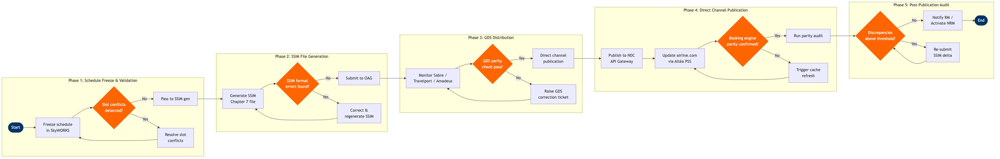

| Step | L4 Step Name | KPI / Target | Pain Point / Risk | Gate |
|---|---|---|---|---|
| 1.1 | Initiate seasonal schedule freeze in SkyWORKS | Schedule frozen ≥330 days before season start per IATA standard | Late commercial decisions (new routes, frequency changes) force freeze date slippage, compressing the GDS loading window and risking incomplete availability at booking opening | |
| 1.2 | Validate schedule against airport slot constraints | 100% slot compliance achieved before SSIM generation; zero unresolved conflicts at freeze | Slot-constrained airports (LHR, JFK, CDG, NRT) require manual bilateral negotiation; automated IATA CRS checks surface conflicts but offer no resolution path, requiring scheduler intervention | ⚠ |
| 1.3 | Resolve slot conflicts and revalidate schedule | Slot conflict resolution within 5 business days of detection | Slot swaps require bilateral agreement with competing carriers; absence of a multilateral slot exchange platform means resolution depends on ad-hoc email negotiation with slot coordinators | |
| 2.1 | Generate SSIM Chapter 7 file from frozen schedule | SSIM generated within 2 hours of freeze confirmation; file size validated within expected range | Complex codeshare and interline agreements require precise segment-level carrier attribution in SSIM records; errors in marketing vs. operating carrier fields cause booking failures across all GDS channels | |
| 2.2 | Validate SSIM file against IATA format standards | Zero format errors before transmission; validation run completed in <30 minutes | IATA SSIM Chapter 7 format is field-position-exact; minor field-length violations or non-standard aircraft type codes cause full file rejection by GDS ingest pipelines, requiring a complete regeneration cycle | ⚠ |
| 2.3 | Correct SSIM errors and regenerate file | Correction and regeneration cycle completed in ≤4 hours per iteration | Root cause of SSIM errors often lies in upstream schedule attributes (equipment codes, operating carrier flags); manual correction risks introducing new errors without an integrated diff-check tool | |
| 3.1 | Submit validated SSIM to OAG for GDS distribution | SSIM submitted to OAG ≥12 months before season start for initial seasonal load; re-submissions within 4 hours of correction sign-off | OAG processing queue can introduce 24–48 hour delays during peak IATA schedule submission periods (March and October); cascading delay compresses the booking-open window for new routes | |
| 3.2 | Monitor Sabre GDS schedule ingestion and loading | Sabre schedule parity ≥99.5% within 72 hours of SSIM submission | Sabre's batch processing window is nightly; intraday schedule corrections are not reflected until the following day's run, requiring a manual Sabre support ticket for urgent changes such as flight cancellations or time shifts | ⚠ |
| 3.3 | Monitor Travelport GDS schedule ingestion and loading | Travelport schedule parity ≥99.5% within 72 hours; Apollo/Galileo consistency 100% | Travelport's Apollo and Galileo sub-platforms have different update cadences; inconsistency between the two creates agent booking confusion and potential duplicate or missing availability for the same flight | |
| 3.4 | Monitor Amadeus GDS schedule loading across all PCCs | Amadeus schedule parity ≥99.5% within 72 hours; full PCC propagation confirmed within 96 hours | Amadeus GDS propagation to all Pseudo City Codes can lag by 24 hours; corporate TMC agents using affected PCCs see stale or missing schedules during the propagation window, generating avoidable calls to airline sales teams | ⚠ |
| 4.1 | Publish schedule to NDC API Gateway for OTA partners | NDC schedule availability within 4 hours of SSIM freeze confirmation; API offer response latency <200ms at P99 | NDC schema versioning (IATA NDC 21.3) mismatches with OTA partner implementations cause silent failures where offer requests return empty results with no error surfaced to the traveller; debugging requires partner-by-partner API log analysis | |
| 4.2 | Update airline.com booking engine via Altéa PSS | Direct channel schedule accuracy 100%; booking engine page response time <3 seconds; availability parity with GDS within 1 hour of schedule publication | Altéa PSS schedule cache refresh requires a manual trigger for urgent changes; stale cache causes customers to see phantom flights or missing flights, generating misdirected bookings and call-centre volume spikes | ⚠ |
| 5.1 | Execute cross-channel schedule parity audit | Cross-channel schedule parity ≥99.8% within 5 business days of initial load; audit covering 100% of new and changed flights | No real-time automated parity monitoring tool spans all five distribution channels simultaneously; manual spot-checks via OAG miss low-frequency discrepancies such as wrong equipment type or missing return leg that only manifest at specific date ranges | ⚠ |
| 5.2 | Issue SSIM delta file and re-submit for channel correction | Critical corrections (cancellations, departure time changes >15 min) re-distributed within 4 hours; all corrections confirmed propagated within 48 hours | SSIM delta files require the same full validation cycle as the initial file; urgent corrections still take 24–48 hours to propagate across GDS batch pipelines, during which customers may purchase now-invalid itineraries requiring involuntary rerouting | |
| 5.3 | Notify Revenue Management and activate NRM inventory | NRM inventory activation within 24 hours of schedule publication sign-off; 100% of new routes activated before booking opening date | NRM inventory loading following SSIM publication is not automated; the manual handoff between Schedule Planning and Revenue Management teams introduces activation delays of 1–3 days, causing new flights to go on sale without yield controls in place and exposing the airline to underpriced early bookings |